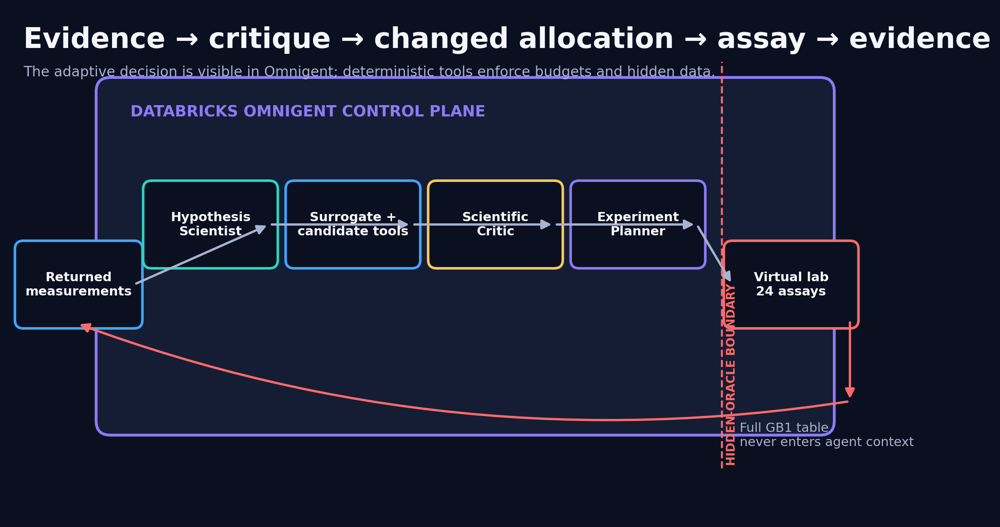
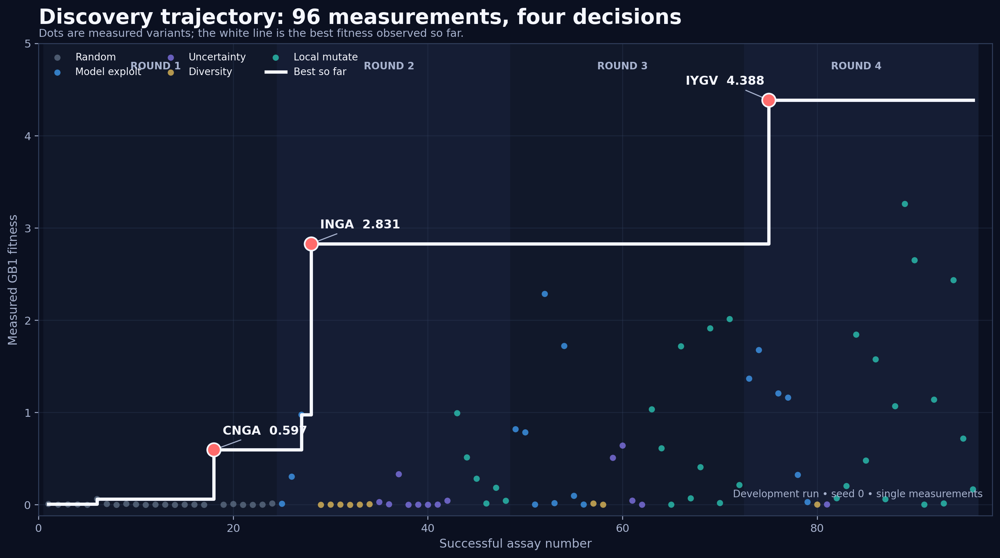
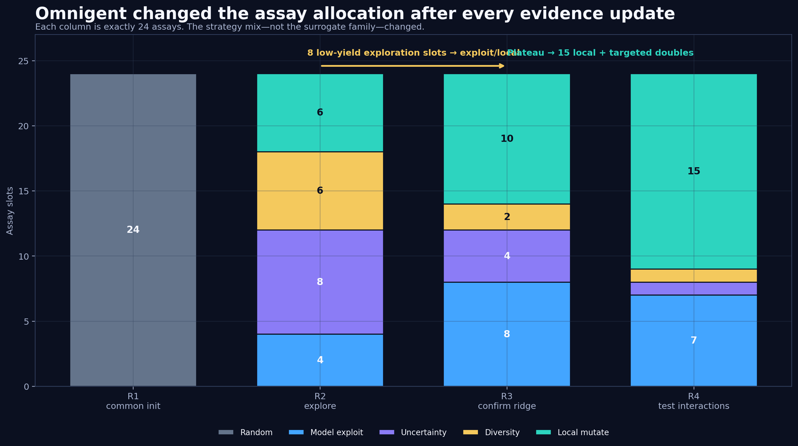
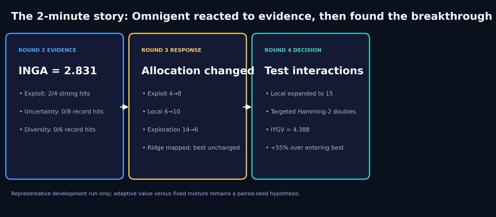
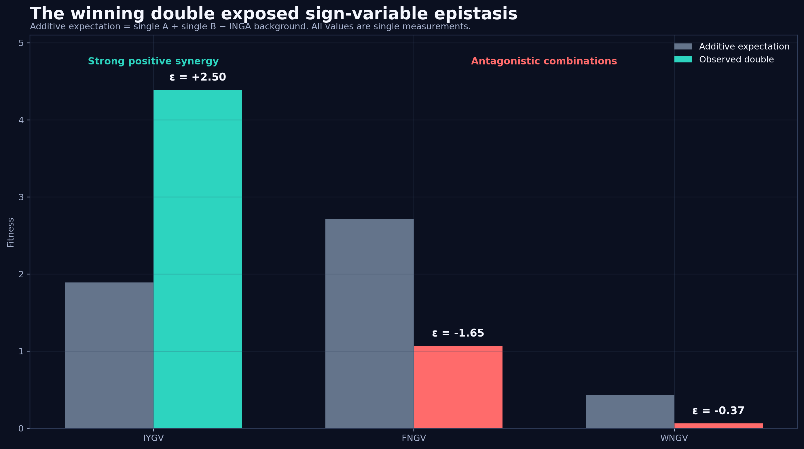
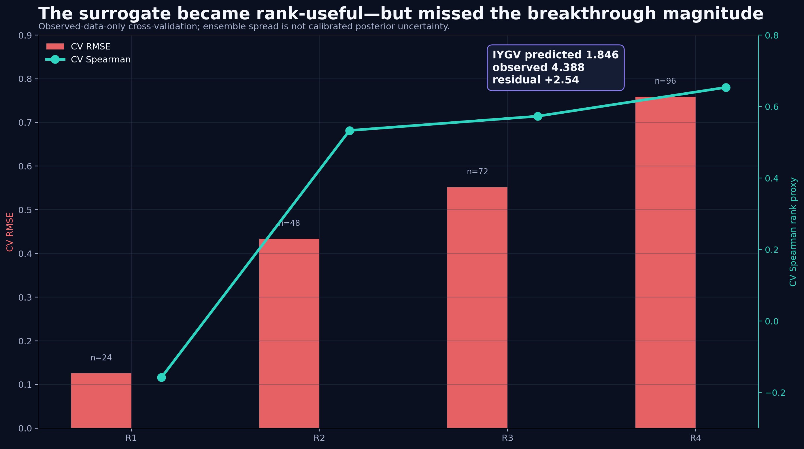
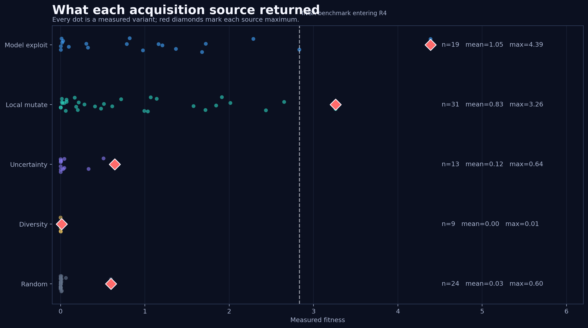
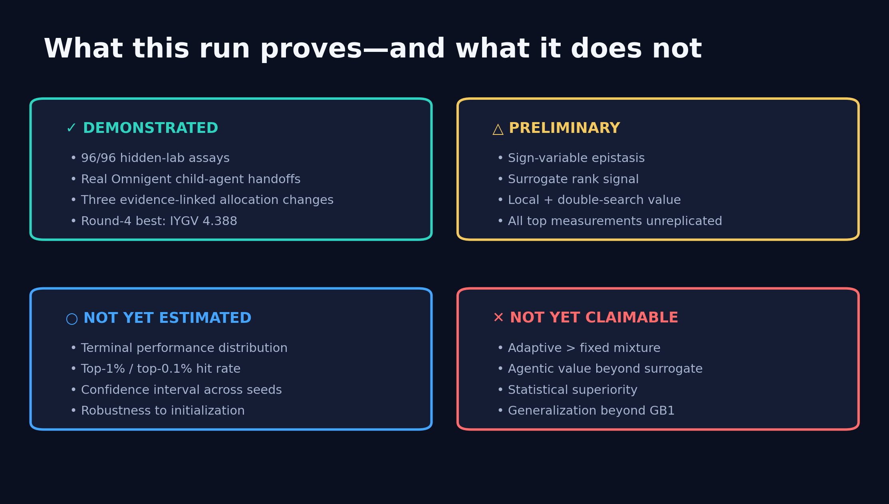

DATABRICKS OMNIGENT × GB1
IYGV 4.388
Best observed fitness after exactly 96 hidden-lab measurements
96 assays. Four rounds. One hidden GB1 landscape.
Best observed fitness after exactly 96 hidden-lab measurements
Does evidence-driven strategy switching add value beyond the same surrogate model?

A visible 4-round trajectory from initialization to a high-fitness double mutant.

Omnigent shifted budget away from low-yield exploration and toward local/interaction tests.

The exact transition to show in the demo video.

IYGV showed strong positive epistasis while related combinations were antagonistic.

The surrogate ranked the winner highly enough to test—but badly underpredicted its magnitude.

Model exploitation found the terminal best; local mutation found the best single mutant.

A compelling development run, not yet a causal superiority result.
